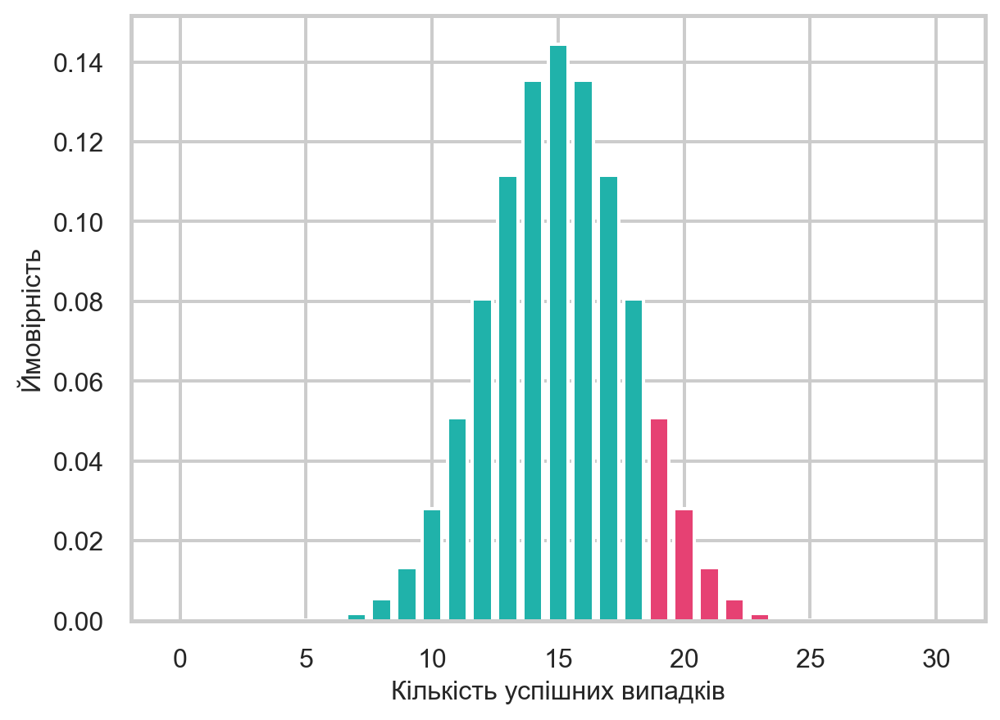

Ви вирішили створити платформу онлайн-курсів з програмування. Ви записали навчальні відео та запропонували користувачам доступ за передплатою. Вартість курсу для студента становить 1000 рублів, а витрати на підтримку платформи та індивідуальні консультації коштують вам 500 рублів з кожного студента.
Проте ви помічаєте, що деякі люди відмовляються від курсу після першого заняття, якщо матеріал їм здається складним або нецікавим. Інвестори готові підтримати ваш проєкт, якщо рівень відмов буде нижче 50%.
Щоб це перевірити, ви проводите експеримент: залучаєте 30 нових студентів. 19 із них проходять курс й оплачують доступ, а 11 відмовляються. 19 — це більше половини, але чи достатньо цього, щоб довести перспективність проєкту?
Розв’язуючи таку задачу, ми припускаємо, що існує певна аудиторія, яка користуватиметься нашим сервісом. Цю групу називають генеральною сукупністю. Якщо запустити сервіс для всіх потенційних користувачів, у ньому буде певна частка успішних випадків, позначимо її як \(\mu\). Це невідомий параметр, який ми не можемо визначити безпосередньо. Натомість ми можемо проводити експерименти та досліджувати результати. Оскільки протестувати продукт на всій аудиторії неможливо, ми беремо вибірку з генеральної сукупності та аналізуємо частку успішних випадків.
Згідно з результатами нашого експерименту, спостережувана ймовірність оплати становить \(\hat{\mu} = 19/30 = 0.63\)1. Це означає, що 63% студентів оплатили доступ. Чи можемо ми зробити висновок, що справжня частка успішних випадків перевищує 50%?
Розгляньмо, чому отримане значення може не бути переконливим доказом. Припустимо, що ймовірність успішної оплати дорівнює \(\mu = 0.5\), і змоделюємо можливі результати для 30 студентів.
Давайте спростимо цю задачу до прикладу з підкиданням монетки та змоделюємо результати для 30 спроб:
Якщо монетка випаде орлом, студент оплачує доступ.
Якщо монетка випаде решкою, студент відмовляється від курсу.
Використаємо метод integers() до класу Generator, яка генерує випадкові цілі числа в заданому діапазоні.
Підкинемо монетку 30 разів та порахуємо кількість успішних випадків.
Ми бачимо, що в експерименті частка успішних випадків навіть перевищила 63%, тоді як у симуляції була закладена ймовірність 50%.
Тому, на жаль, ми не можемо з абсолютною точністю визначити, яким є справжнє значення \(\mu\) у генеральній сукупності та чи перевищує воно 50%, незалежно від того, скільки спостережень ми проводимо. Однак, застосовуючи методи прикладної статистики, ми зможемо використати інструменти, які допоможуть ухвалити правильне рішення, зокрема й у цьому випадку.
1.2 Статистичні гіпотези
Ми з’ясували, що навіть за ймовірності \(\mu = 0.5\) можна отримати значну кількість успішних випадків. Насправді ми спеціально підбирали seed для отримання такого результату. Якщо повторити цей експеримент з іншим значенням seed або збільшити кількість спостережень, результат може виявитися іншим.
Порада
Спробуйте змінити seed (наприклад 22) або кількість спостережень та перевірте, як змінюється результат.
Тож велика кількість успішних випадків може бути результатом випадковості. Щоб вирішити, чи можна вважати результати експерименту статистично значущими необхідно отримати відповідь на питання:
Чи можна вважати, що спостережуване значення \(\hat{\mu}\) є більшим від \(\mu = 0.5\)?
Звернімося до теорії ймовірностей. Факт підписки на наш сервіс для кожного окремого студента можна розглядати як випадкову величину \(\xi\), яка підпорядковується розподілу Бернуллі3. Параметр цього розподілу, а саме ймовірність успіху, нам невідомий.
\[
\xi \sim \text{Bernoulli}(\mu)
\]
де \(\mu\) — ймовірність успіху.
Нас цікавить підтвердження того, що \(\mu > 0.5\). У статистиці для перевірки гіпотез розглядають дві можливості:
Нульова гіпотеза (\(H_0\)) формулюється як твердження, яке ми прагнемо спростувати.
Альтернативна гіпотеза (\(H_1\)) висловлює припущення, яке ми хочемо довести.
де \(\xi_i\) — випадкова величина, яка показує успіх у \(i\)-му спостереженні, \(S_n\) — кількість успішних випадків у \(n\) спостереженнях, \(n\) — кількість спостережень, \(\mu\) — ймовірність успіху.
Давайте подивимось, як це виглядає графічно. Для цього побудуємо графік функції щільності ймовірностей для біноміального розподілу з параметрами \(n = 30\) та \(\mu = 0.5\).
n =30mu =0.5x = np.arange(0, n +1)y = binom.pmf(x, n, mu)plt.bar(x, y, color=turquoise)plt.bar(x[x >=19], y[x >=19], color=red_pink)plt.xlabel("Кількість успішних випадків")plt.ylabel("Ймовірність")plt.show()

Рисунок 1.1: Функція щільності ймовірностей при \(H_0\)
На графіку зображено функцію щільності ймовірностей для біноміального розподілу з параметрами \(n = 30\) та \(\mu = 0.5\). Ціановим кольором позначено ймовірності для кожної кількості успішних випадків. Рожевими виділено ймовірності для кількості успішних випадків, яка дорівнює або перевищує 19.
У статистиці \(\hat{\mu}\) позначається як оцінка параметра \(\mu\).↩︎
Метод integers() генерує випадкові цілі числа в заданому діапазоні. Аргумент endpoint вказує, що верхня межа включається у діапазон.↩︎
Розподіл Бернуллі — це дискретний розподіл ймовірностей, який моделює випадковий експеримент з двома можливими результатами: успіхом або невдачею.↩︎
Біноміальний розподіл моделює кількість успішних випадків у послідовності незалежних випробувань. Сума \(n\) незалежних випадкових величин з розподілу Бернуллі підпорядковується біноміальному розподілу.↩︎